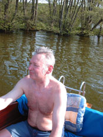
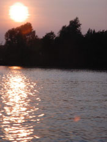

|
|
|
Anbaden im Mai 2002 Heidensee von Schwerin  Mein Kapitän  Abend-Idylle über den Ziegelsee |
Sport
ist die Methode, langsame Krankheiten
Ich bin seit frühester Kindheit eine begeisterte SCHWIMMERIN. Obwohl ich das Schwimmen in unserem kleinen Dorfbach in Ostramondra erlernt habe, bin ich doch eher für das Schwimmen in großzügigen Gewässern, wie beispielsweise den Heidensee oder den Ziegelaußensee von Schwerin. Von kleinen Swimmingpool's halte ich indes nicht viel. Schon deshalb sind Aufenthalte in fernen Gefilden mit vielen Menschen, Hotels und Pools wenig reizvoll für mich. Es gibt kaum etwas schöneres, als bei Windstille in abendlicher Sommerstimmung in Ruhe ein paar Runden oder Bahnen im weitläufigen Terrain zu drehen. Dann scheint man im Ursprung allen Lebens angekommen zu sein, fühlt sich wohl und geborgen und kann die Seele baumeln lassen und alle Sorgen fallen scheinbar auf den Grund, auch wenn sie leider am Ufer wieder auf uns warten. Ich fahre auch sehr gerne FAHRRAD. Leider bin ich aber über weite Strecken und das tägliche Training etwas aus der Übung gekommen. Im Fernsehen interessiert mich Sport kaum. Allerdings schaue ich mir sporadisch die "Tour de France" an, wobei der letzte Tag in Paris natürlich jeweils ein MUSS ist. Ich spiele auch sehr gerne - wenn auch nur mit mäßigem Erfolg - TISCHTENNIS und habe meinen Spaß, wenn ich knapp, aber meistens doch haushoch Steven unterlegen bin...... Und nun hätte ich doch beinahe vergessen zu schreiben, dass ich mich auch für Bowling/Kegeln begeistere und gerne mal eine ruhige Kugel schiebe.
Medaillen haben immer zwei
Seiten.
|

{kind=link}
{kind=link}